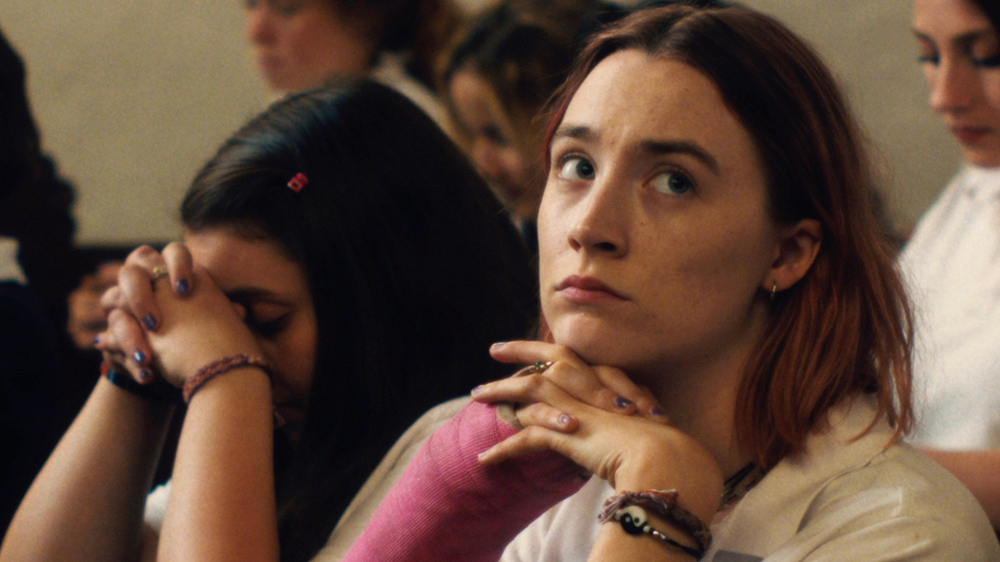

How a mother and daughter can share a city, a car, a whole life—and still struggle to find the same language.
ISSUE 02 — THE DIGITAL EDITIONNEW YORK, NOVEMBER 2026NOW ON YOUR SCREEN
SEEN
WATCH. TALK. PASS IT ON.GOOD FILMS. BETTER COMPANY.

THE NOVEMBER ISSUE01 / THE COVER STORY
ON FAMILY, BELONGING & COMING HOMEA SEAT AT
LADY BIRD (2017) / A24A SEAT AT
THE TABLE.
For the people we come home to.
And the films that bring us a little closer.
THIS MONTH: COME AS YOU ARE. STAY FOR THE CONVERSATION.OPEN THE ISSUE ↓
THE LIGHTS GO OUT
A film ends.
Make room for what follows.
November brings us back into rooms with other people. Some familiar. Some complicated. This issue is about the space between being related and feeling understood. Choose a film, pull up a chair, and ask the question you haven’t asked yet.
SEEN / ISSUE 0202NOV
2026
2026
01 / THE STORIES
Stay a little longer.
THREE FILMS. ROOM FOR ANOTHER READING.THE QUESTION TO TAKE WITH YOU
“Which film feels
like coming home to you?”
02 / TO BE SEEN
November, on screen.
NEW RELEASES. NEW CONVERSATIONS.Three films to make a plan around.
Choose with somebody in mind.
US theatrical dates announced for November 2026. Checked 21 October 2026; schedules may change. Upcoming-film notes are previews, not reviews.
03 / WATCH TOGETHERYOUR NIGHT.
YOUR NIGHT.
YOUR PICK.
Choosing is part of the night. Pass the screen around, let each person cast one vote, then give the winner a date.
Someone brings the film.
Someone brings the snacks.
THE NOVEMBER BALLOTONE PERSON. ONE PICK.
Votes stay in this browser. Pass the screen to vote together.
04 / PLAY THE QUIZSEEN IT?
SEEN IT?
PROVE IT.
Six questions. Six points.
A little friendly competition
before the next screening.
QUESTION 01 / 06SCORE 0
No timer. No pressure. You can always watch it again.
05 / AFTER THE CREDITS
This one is for you.
A RECOMMENDATION WITH A RECIPIENT.The best part of
a recommendation
is what comes back.
A title is a start. A reason makes it personal. Make a card for someone whose response you want to hear.
Your draft stays in this browser. Share it when you’re ready.